Projekt Lötstation
Die Lötstationen wurden bereits vor einigen Jahren gebaut, das Wissen darüber ging jedoch leider verloren. Dieses Repo versucht alle Infos wieder auszugraben und das Projekt zu dokumentieren.
Die ursprüngliche Idee für diese Selbstbau-Löstation kommt von Arduino Hannover und wurde in der Make.
Der original Blog-Post zu unseren Lötstationen ist hier.
Unsere Quellcodes und die Pinzuordnung Arduino/Display (ST7735-Chip) gibt es in unserem Git-Repo. Die ursprüngliche Doku zur Lötstation ist im Chaostreff Wiki.
Hier noch ein kleines Video der fertigen Lötstation.
Tasten
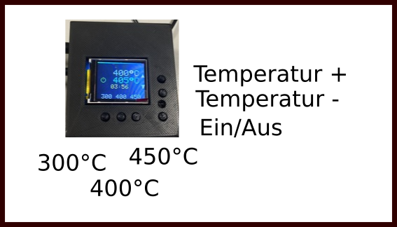
Schaltplan

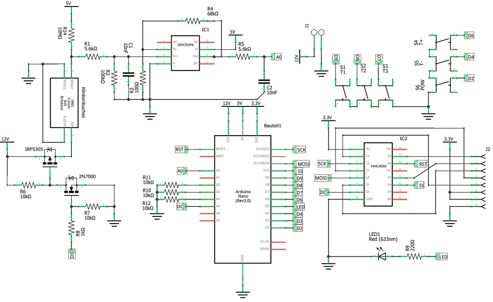
Hardware
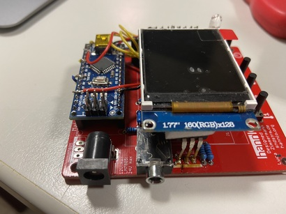
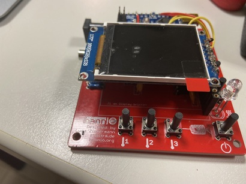
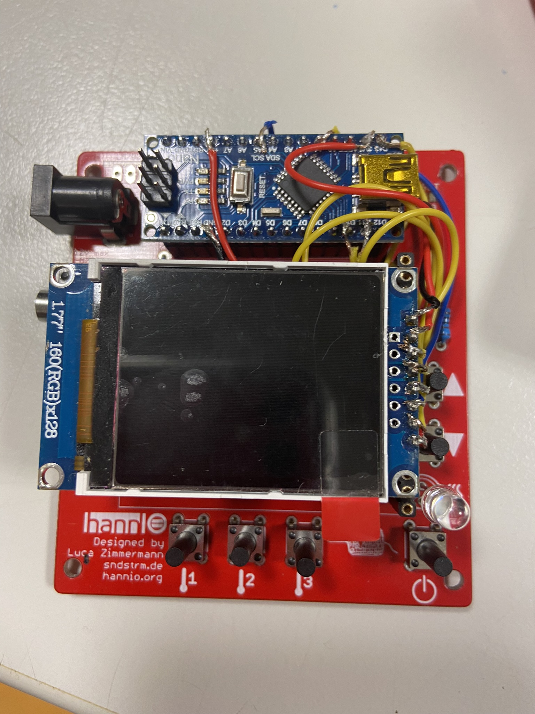
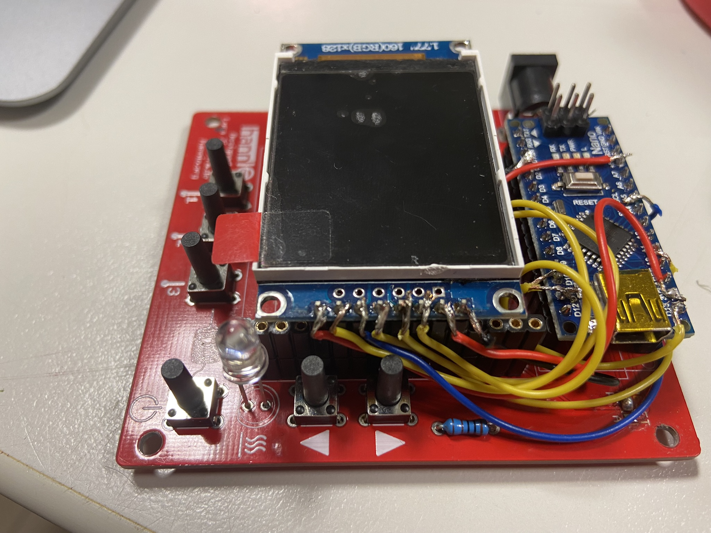
Löten
Verbinden
- Lötspitze anschließen:
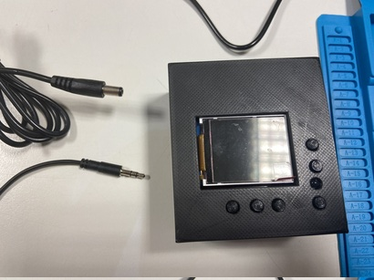
- Strom anschließen:
- Warten bis die Lötstation hochgefahren ist:
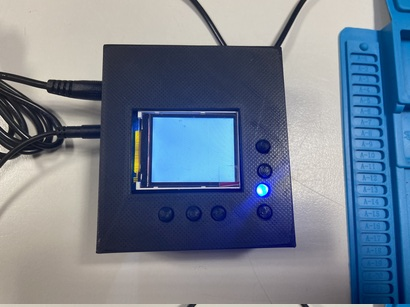
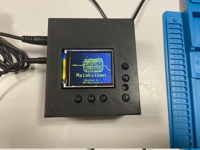
Betriebszustände
- Ausgeschaltet
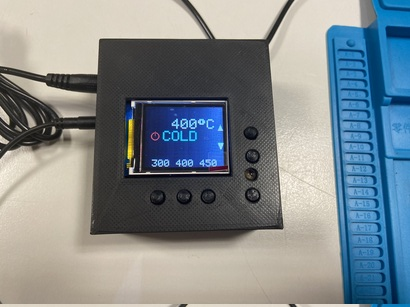
- Eingeschaltet:
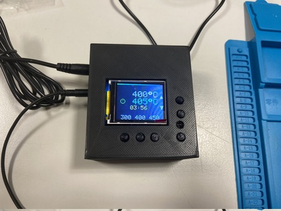
- Standby:
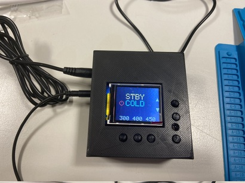
Viel Spaß beim Löten!
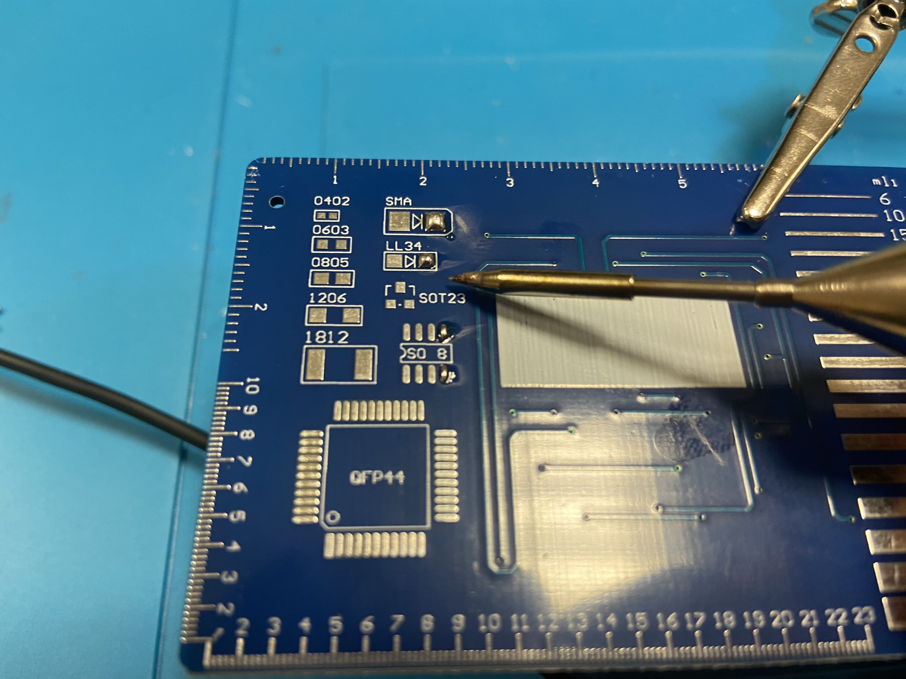